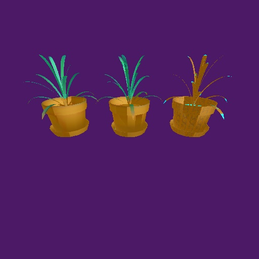

This plant model is mapped with spherical, shrinkwrap, and face mapping (respectively left to right).
The object color is cyan, and the face mapping correctly fills only 4 sided polys (It kinda~sorta fills triangles), the three sided ones which are not filled are highlighted cyan.
The left and center object look 'ok' in
comparison, although we note that the shrinkwrap has better
quality on the leaves. They are close to vertical, and spherical
mapping places only a small area of the texture on their surface.
The shrinkwrap, which is based on a cylinder, gathers much more
detail for the leaves.